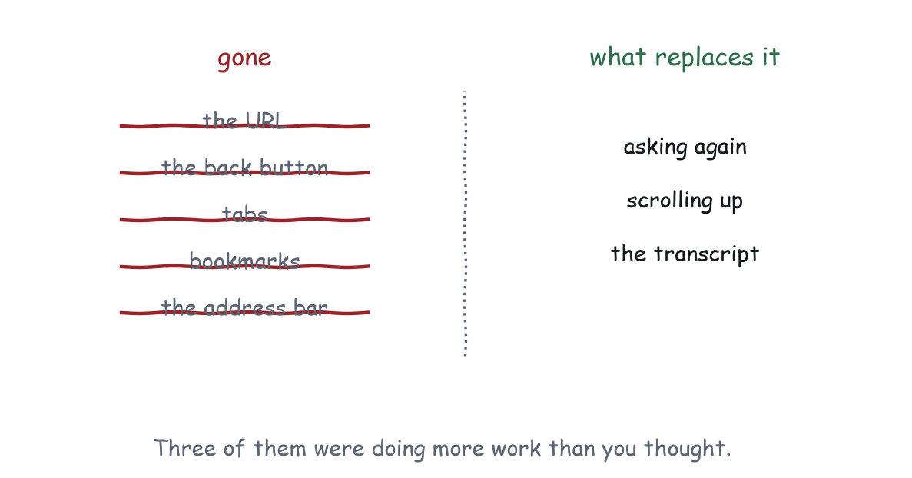
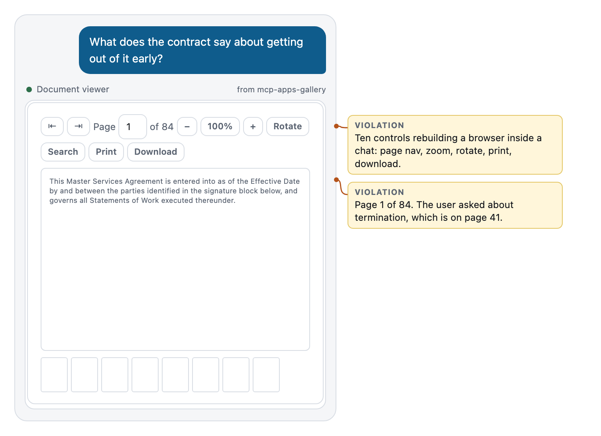
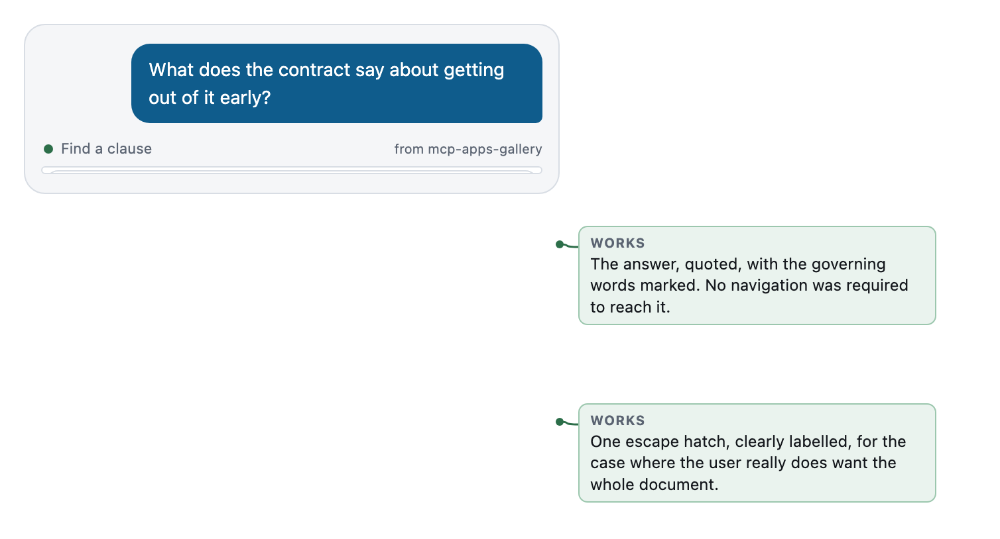

Chapter 8
Navigation in Someone Else's House
No URLs, no tabs, no back button, and what actually replaces each of them.
Krug’s chapters on navigation are about a simple, unglamorous need: users have to know where they are, what else is here, and how to get back.
The web solved that with an enormous amount of shared infrastructure. The URL names the place. The back button undoes the move. Tabs hold parallel places. Bookmarks make a place durable. Breadcrumbs show the hierarchy. Every user knows all of it, because every site has it, which is why site-specific navigation schemes always lose to browser affordances.
You get none of it.

What replaces each thing
The URL is replaced by the sentence.
The user does not navigate to your app; they say something and the model picks it. So the addressing scheme for your application is natural language, resolved by the model against your tool descriptions and schemas.
That has a direct implication most teams never act on: your tool description and input schema are your URL structure. They are how the user gets to a specific state of your app. A tool with an empty schema has exactly one address. A tool with horizonYears, origin, destination, and date has as many addresses as those values allow, and the user can reach any of them by saying so.
Naming matters for the same reason it mattered in URLs. compare_rates is guessable. loan_analytics_suite_v3 is not, and the model’s guess is the only thing standing between the user and your app.
The back button is replaced by saying so.
“No, go back to the five-year view.” This works, and it works well, but only under the condition from Chapter 7: the tool must accept the parameter, and the model must know the value.
Do not build your own back button. A back arrow inside a widget is one of the most reliable ways to confuse people in this medium, because it looks like the browser’s back button and does something else. If it undoes a step in your flow, label it with the step: Back to dates, not <.
Tabs are replaced by separate renders.
Two things the user might want to look at are two messages, not two tabs. The transcript is a perfectly good container for parallel things, and it has one enormous advantage over tabs: both are visible at once if you scroll, and both are addressable by asking.
Tabs inside a 380 pixel widget are almost always a sign that two archetypes are fighting. Figure 1-2 has four of them.
Bookmarks are replaced by the transcript itself.
The conversation is durable, searchable, and shareable. A render that happened is still there. This is a better bookmark than a bookmark, with one condition: the render must be re-summonable, which is again the Chapter 7 contract.
Breadcrumbs are replaced by saying where you are.
One line of text at the top of the widget. SFO to JFK, one passenger, economy. Clause 7.3, page 41 of 84. Comparing over 5 years. That line is doing the work of a breadcrumb trail, a page title, and an orientation cue, and it costs one row.
Multi-step flows
The hard case. The user has to do three things in order. Where do the steps go?
There are three shapes, and each breaks in a different place.
The wizard inside one widget
Step 1, next, step 2, next, step 3, done. One render, internal state.
Works when: the steps are genuinely sequential, short, and meaningless separately. Choosing a seat then choosing a meal.
Breaks when: the user wants to go back and the back is yours to implement. Breaks worse when the conversation moves on mid-wizard and the widget is now a half-finished form nobody will return to. Breaks worst for the second user, which sees one tool call and one result and has no idea the human is on step two of three, unless you say so on every step.
If you build a wizard, write back at every step. Not at the end. The end may not arrive.
Multiple renders, one per step
The tool is called three times. Three widgets appear in the transcript, in order.
Works when: each step is meaningful on its own, and the model has something to do between them. Pick a flight, then confirm the fare, then choose a seat. It reads naturally as a conversation, because it is one.
Breaks when: the steps are trivial. Three renders for one logical action is three consent prompts and a lot of scrolling. Nobody wants a widget that says “click next” three times.
Also breaks when the earlier renders go stale, which they will, because they are still on screen. A picker that has already been used should say so. The gallery’s picker replaces itself with a confirmation on selection, for exactly this reason.
One card with progressive disclosure
Everything on one card. The secondary parts are collapsed. Nothing is sequential; the user opens what they care about.
Works when: the steps are not really steps. Most “three-step flows” are one decision plus two defaults somebody was afraid to assume.
Breaks when: there genuinely is an order, and a required step is hidden inside a disclosure the user never opened.
Which to choose
The test: can the user do them in any order?
Yes: one card, progressive disclosure. No, and each step matters on its own: multiple renders. No, and the steps are meaningless separately: one widget, and write back at every step.
The gallery’s expense confirmation is the first shape. What looked like a nine field form is one decision, four assumptions shown as facts, and a disclosure for corrections. It was never a flow. It was a form pretending to be one.
Teardown: getting to a clause
The task: “what does the contract say about getting out of it early?”

Ten controls: page back, page forward, a page number field, zoom out, zoom level, zoom in, rotate, search, print, download. A thumbnail strip. And page 1 of 84.
Every one of those controls exists because a document viewer on the desktop needs it. In a chat, they are answers to questions the user did not ask. The user asked about termination. That is on page 41.
The navigation model here is: the user reads the toolbar, finds search, types the word they already said out loud, reads the result list, clicks one, and arrives. Five interactions to reach a place the model could have gone directly.
There is a second failure worth naming. The model cannot see the pixels. After this renders, if the user asks “so what is the notice period?”, the model has pageText for page 1 and nothing else. It will answer from the wrong page or not at all.

The topic became an argument: find_clause({ topic: "early termination" }). The server did the finding. The render arrives already at the answer, with the governing words marked, and the location stated as a breadcrumb: page 41.
Two controls remain, and they earn it. Previous and next match, because there are three clauses and comparing them is the actual task. And one escape hatch, Open full document, clearly labelled, for the case where the user really does want all 84 pages.
Every match is written back with setContext, so the follow-up question is answerable in text without another render. The user can also navigate by talking: “what about the one on page 58?”
The lesson generalises past documents. Navigation is usually a search problem, and search is the model’s job. Every step of navigation you put in your widget is a step you took away from the interface that is better at it.
Deep linking, by asking
One consequence worth stating on its own, because it is a genuinely nice property of this medium.
If your tool’s arguments describe the interesting states of your app, then every one of those states is reachable by a sentence, from any point in any conversation, without a link, a route table, or a router.
“Show me the clause about confidentiality.” “Compare those at three years.” “Pull up the deploy for 2026.8.12.”
That is deep linking, and you got it for the price of writing a decent input schema. It is the compensation for losing the URL, and it is a better deal than it sounds, as long as you hold up your end.
What to remember
No URLs, no back button, no tabs, no bookmarks. The sentence is the address, the schema is the address space, the transcript is the history, and one line of text is the breadcrumb. Multi-step flows have three shapes and the choice is decided by whether order matters. Navigation inside your widget is usually search done badly, and search belongs to the model.
Next chapter: the widget that does something, and what it owes both users when it does.